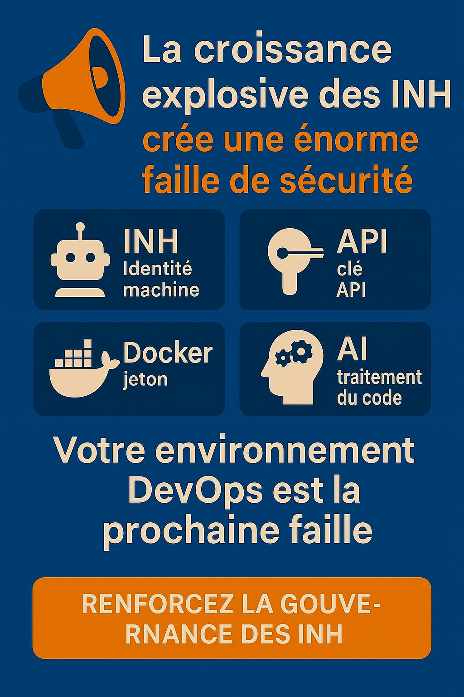

Blog
🚨 Un problème majeur de cybersécurité que vous pourriez négliger :
16 Avril 2025

Ce ne sont pas les comptes humains, mais les identités non humaines (NHI) qui sont au cœur d’une crise de fuite de données.
Rapport 2025 :
- 🔓 En 2024, 23,77 millions de nouveaux secrets ont été divulgués sur GitHub.
- 🧬 Les identités non humaines possèdent 45 fois plus de certificats que les comptes humains.
- ⚠️ Les risques de fuite dans les dépôts augmentent de 40 % avec l’aide de Copilot.
- 💥 Docker Hub a exposé 100 000 clés valides.
- 📎 Les secrets dans Slack/Jira sont plus critiques et difficiles à détecter.
Nous sommes déjà entrés dans une ère où les risques de sécurité sont dominés par les machines, mais la plupart des systèmes de gestion des secrets restent centrés sur les modèles humains.
👉 C’est un fossé dans la gouvernance de la cybersécurité.
👉 Nous devons maîtriser pleinement les risques liés aux API, aux comptes de service et aux secrets générés par l’IA.
Encore en train de penser qu’« cacher suffit pour être en sécurité » face aux identités non humaines ? Il est temps de se réveiller.
Hashtags :
#NHI
#IdentitéNonHumaine
#DevSecOps
#FuiteDeSecrets
#RisquesAPI
#SécuritéIA
#TendancesCybersécurité
Citations :